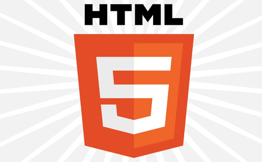

Bienvenido al Portal Educativo
Este sitio ha sido diseñado con la intención de explorar los fundamentos de la World Wide Web y su impacto transformador en la sociedad digital moderna.

Pilares Fundamentales del Desarrollo
- HTML: Proporciona la estructura semántica de los documentos.
- CSS: Controla el diseño visual, espaciado y tipografía.
- JavaScript: Permite interactividad y lógica del lado del cliente.
Fases para Aprender Desarrollo Web
- Comprender el funcionamiento de Internet y el protocolo HTTP.
- Diseñar interfaces accesibles y semánticas.
- Programar algoritmos y manejar eventos en el navegador.